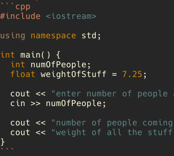
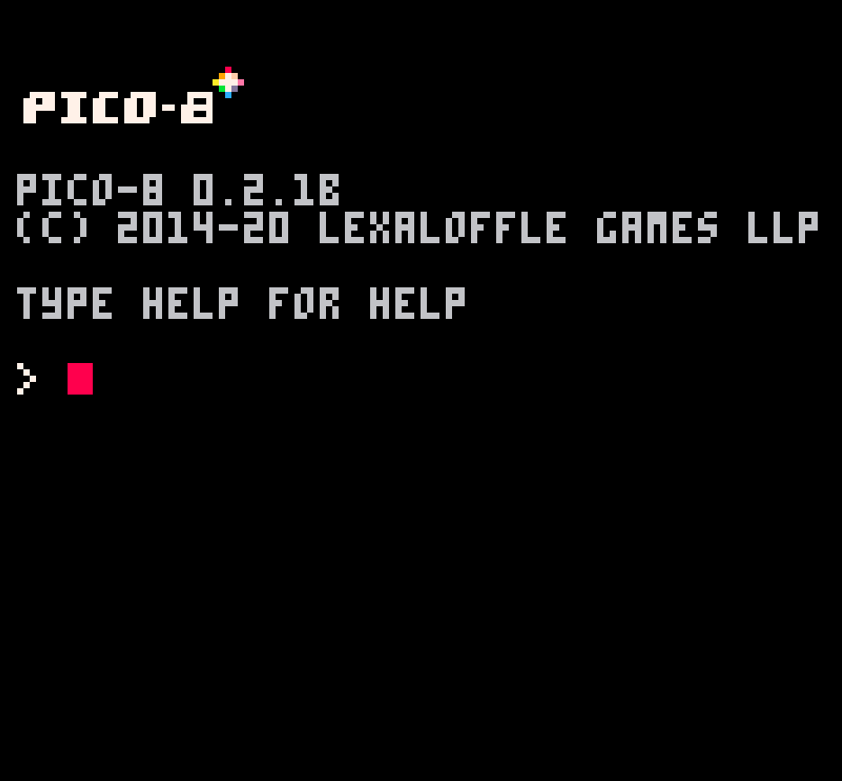
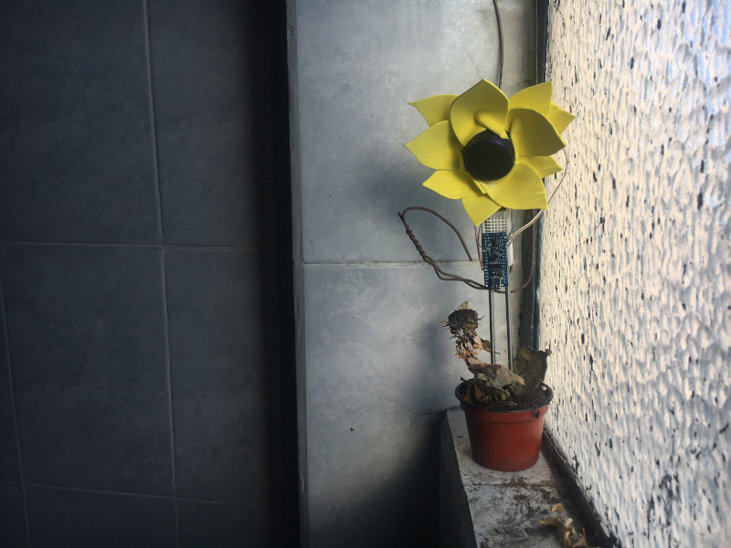

juanedflores [ BLOG ]
-
Link
More About This Blog (WIP)
last modified: 2021-02-08I detail the features of this blog, the intentions, and the code that makes it work.
Productivity
-
Link
Working with Pixels in Processing (WIP)
last modified: 2021-02-08Studying how pixels work and how to manipulate them in Processing.
Processing Pixels Pixel Art
-
Learning C++ (WIP)
last modified: 2021-02-08Learning the C++ language by going through online resources and examples.
C++ -
Processing P3D (WIP)
last modified: (2021-01-29)I walk through the basics of using 3D in Processing 3 and provide a few examples useful for learning some core concepts.
creative coding 3D processing
-
PICO-8 (Under Construction)
last modified: (2021-01-27)"PICO-8 is a fantasy console for making, sharing and playing tiny games and other computer programs."
Creative Coding Game Design -
Learning GLSL (WIP)
last modified: 2021-01-27I go through resources in order to learn the OpenGL Shading Language.
GLSL -
Daily Task Manager (Under Construction)
last modified: (2021-01-23)I wrote a program to visualize the tasks I did on the previous day. By analyzing how much time I spend doing certain tasks during the day, I can get a sense of how to be more efficient.
productivity processing data visualization
-
Robotic Flower Pets! (Under Construction)
last modified: (2021-01-23)I like creating little flowers that can squeak, peep, and ultimately react to its environment. A simple, fun, and continous project.
electronics sensors